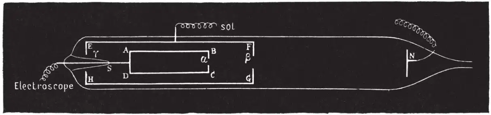
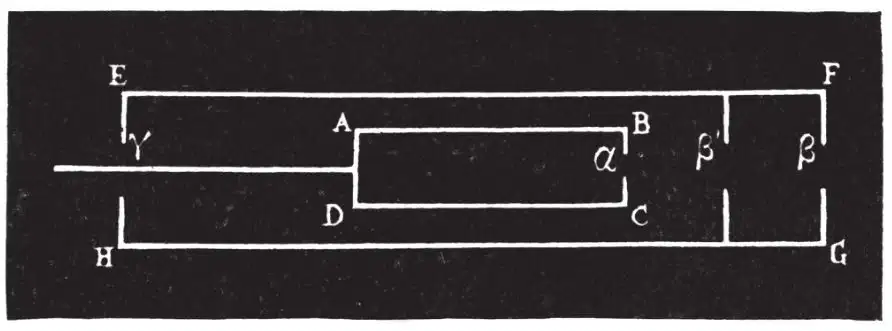

中文
中文M. J. Perrin
Editor’s Note
Physicists were puzzled by cathode rays, which carried energy from a negative electrode (cathode) toward a positive electrode inside a vacuum tube. Experimenters had determined that they originated at the cathode, but could not say what they were. In this classic paper the French physicist Jean Perrin reports experiments that helped to clarify the mystery. He placed into a cathode ray tube a metal cylinder linked to an electroscope, which would measure any charge deposited into it. When the cathode rays were directed into the tube, Perrin detected a significant negative charge. Perrin speculated that the charge carriers were negative ions created near the cathode. In fact they were electrons, as J. J. Thomson discovered one year later. 中文
(1) Two hypotheses have been propounded to explain the properties of the kathode rays. 中文
Some physicists think with Goldstein, Hertz, and Lenard, that this phenomenon is like light, due to vibrations of the ether†, or even that it is light of short wavelength. It is easily understood that such rays may have a rectilinear path, excite phosphorescence, and affect photographic plates. 中文
Others think, with Crookes and J. J. Thomson, that these rays are formed by matter which is negatively charged and moving with great velocity, and on this hypothesis their mechanical properties, as well as the manner in which they become curved in a magnetic field, are readily explicable. 中文
This latter hypothesis has suggested to me some experiments which I will now briefly describe, without for the moment pausing to inquire whether the hypothesis suffices to explain all the facts at present known, and whether it is the only hypothesis that can do so. Its adherents suppose that the kathode rays are negatively charged; so far as I know, this electrification has not been established, and I first attempted to determine whether it exists or not. 中文
(2) For that purpose I had recourse to the laws of induction, by means of which it is possible to detect the introduction of electric charges into the interior of a closed electric conductor, and to measure them. I therefore caused the kathode rays to pass into a Faraday’s cylinder. For this purpose I employed the vacuum tube represented in Fig. 1. A B C D is a tube with an opening α in the centre of the face B C. It is this tube which plays the part of a Faraday’s cylinder. A metal thread soldered at S to the wall of the tube connects this cylinder with an electroscope. 中文

Fig. 1 中文
E F G H is a second cylinder in permanent communication with the earth, and pierced by two small openings at β and γ; it protects the Faraday’s cylinder from all external influence. Finally, at a distance of about 0.10 m in front of F G, was placed an electrode N. The electrode N served as kathode; the anode was formed by the protecting cylinder E F G H; thus a pencil of kathode rays passed into the Faraday’s cylinder. This cylinder invariably became charged with negative electricity. 中文
The vacuum tube could be placed between the poles of an electro-magnet. When this was excited, the kathode rays, becoming deflected, no longer passed into the Faraday’s cylinder, and this cylinder was then not charged; it, however, became charged immediately the electromagnet ceased to be excited. 中文
In short, the Faraday’s cylinder became negatively charged when the kathode rays entered it, and only when they entered it; the kathode rays are then charged with negative electricity. 中文
The quantity of electricity which these rays carry can be measured. I have not finished this investigation, but I shall give an idea of the order of magnitude of the charges obtained when I say that for one of my tubes, at a pressure of 20 microns of mercury, and for a single interruption of the primary of the coil, the Faraday’s cylinder received a charge of electricity sufficient to raise a capacity of 600 C. G. S. units to 300 volts. 中文
(3) The kathode rays being negatively charged, the principle of the conservation of electricity drives us to seek somewhere the corresponding positive charges. I believe that I have found them in the very region where the kathode rays are formed, and that I have established the fact that they travel in the opposite direction, and fall upon the kathode. In order to verify this hypothesis, it is sufficient to use a hollow kathode pierced with a small opening by which a portion of the attracted positive electricity might enter. This electricity could then act upon a Faraday’s cylinder inside the kathode. 中文
The protecting cylinder E F G H with its opening β fulfilled these conditions, and this time I therefore employed it as the kathode, the electrode N being the anode. The Faraday’s cylinder is then invariably charged with positive electricity. The positive charges were of the order of magnitude of the negative charges previously obtained. 中文
Thus, at the same time as negative electricity is radiated from the kathode, positive electricity travels towards that kathode. 中文
I endeavoured to determine whether this positive flux formed a second system of rays absolutely symmetrical to the first. 中文
(4) For that purpose I constructed a tube (Fig. 2) similar to the preceding, except that between the Faraday’s cylinder and the opening β was placed a metal diaphragm pierced with an opening β', so that the positive electricity which entered by β could only affect the Faraday’s cylinder if it also traversed the diaphragm β'. Then I repeated the preceding experiments. 中文

Fig. 2 中文
When N was the kathode, the rays emitted from the kathode passed through the two openings β and β' without difficulty, and caused a strong divergence of the leaves of the electroscope. But when the protecting cylinder was the kathode, the positive flux, which, according to the preceding experiment, entered at β, did not succeed in separating the gold leaves except at very low pressures. When an electrometer was substituted for the electroscope, it was found that the action of the positive flux was real but very feeble, and increased as the pressure decreased. In a series of experiments at a pressure of 20 microns, it raised a capacity of 2,000 C. G .S. units to 10 volts; and at a pressure of 3 microns, during the same time, it raised the potential to 60 volts.‡ 中文
By means of a magnet this action could be entirely suppressed. 中文
(5) These results as a whole do not appear capable of being easily reconciled with the theory which regards the kathode rays as an ultra-violet light. On the other hand, they agree well with the theory which regards them as a material radiation, and which, as it appears to me, might be thus enunciated. 中文
In the neighbourhood of the kathode, the electric field is sufficiently intense to break into pieces (into ions) certain of the molecules of the residual gas. The negative ions move towards the region where the potential is increasing, acquire a considerable speed, and form the kathode rays; their electric charge, and consequently their mass (at the rate of one valence-gramme for 100,000 Coulombs) is easily measurable. The positive ions move in the opposite direction; they form a diffused brush, sensitive to the magnet, and not a radiation in the correct sense of the word.§ 中文
(53, 298-299; 1896)
* Translation of a paper by M. Jean Perrin, read before the Paris Academy of Sciences on December 30, 1895.
† These vibrations might be something different from light; recently M. Jaumann, whose hypotheses have since been criticised by M. H. Poincaré, supposed them to be longitudinal.
‡ The breaking of the tube has temporarily prevented me from studying the phenomenon at lower pressures.
§ This work has been carried out in the laboratory of the Normal School, and in that of M. Pellat at the Sorbonne.